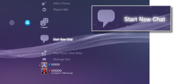
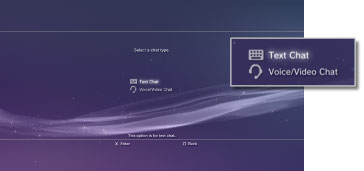
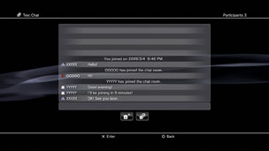

Starting or quitting text chat
To use this feature, you may be required to update the system software.
You can do text chat with people on your Friends list.
Starting text chat
1. |
Select |
|---|---|
|
 |
|
2. |
Select (Text Chat). |
|
 |
|
3. |
Enter a name for the text chat room, and then select [OK]. |
4. |
Select the Friends that you want to invite to chat, and then select [OK]. |
|
 |
 (Start New Chat).
(Start New Chat).Hints
- You must be signed in to PSNSM to do text chat.
- A chat invitation message is not sent for text chat.
- Up to 16 people can join a text chat room.
- The text chat feature cannot be used if restrictions on its use are set. For information about parental control settings, see [About XMB™ menu] > [Using the parental control settings] in this guide.
Joining a text chat room
If you are invited to do text chat, a notification message will be displayed at the top right corner of the screen. Select  (Chat Room (Text Only)) under
(Chat Room (Text Only)) under  (Friends), and then select the chat room that you want to join.
(Friends), and then select the chat room that you want to join.
Hints
- If [Do Not Display] is set in [Notification Messages] under
 (Settings) >
(Settings) >  (System Settings), notification messages will not be displayed.
(System Settings), notification messages will not be displayed. - For most game titles, you can join a text chat during gameplay. Press the PS button on the wireless controller, and then select the chat room that you want to join under (Friends) > (Chat Room (Text Only)). Press the PS button to return to the game screen.
- You can join up to three chat rooms at the same time. If you join a fourth chat room, you will automatically leave the chat room that you joined first.
- Up to 20 chat rooms can be displayed in (Chat Room (Text Only)). When there are more than 20 chat rooms, the oldest chat rooms will automatically be deleted as new chat rooms open.
Leaving a chat room
Press the  button to close the text chat screen. Select the chat room that you want to leave, press the
button to close the text chat screen. Select the chat room that you want to leave, press the  button, and then select [Leave] from the options menu.
button, and then select [Leave] from the options menu.
Hint
If you turn off the PS3™ system or sign out from PSNSM, you will automatically leave the chat room. If you join a chat room again after leaving it, the record of chat entries sent while you were gone will not be displayed.
Deleting a chat room
Select the chat room that you want to delete, press the button, and then select [Delete] from the options menu.
Using the control panel
You can perform the following operations using the control panel on the text chat screen.
 |
Invite a Friend | Invite a friend to join a text chat room |
|---|---|---|
 |
Participant List | View a list of people participating in the chat room |